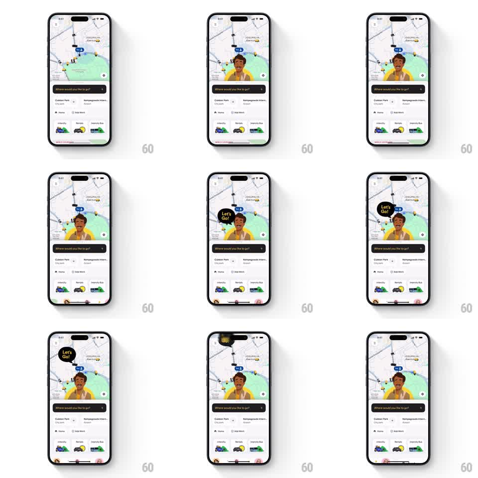

Media
Frame-by-frame

Rebuild this animation 1:1: Namma Yatri's driver greet - a friendly driver mascot springs up from the bottom of the home map, pops a "Let's Go!" speech bubble, then settles back down.

Rebuild this animation 1:1: Namma Yatri's driver greet - a friendly driver mascot springs up from the bottom of the home map, pops a "Let's Go!" speech bubble, then settles back down. ## Integration Integration: stack-agnostic spec - springs given as stiffness/damping, timed motions as duration + curve; map every value to your framework and animation library of choice. ## Scene Ride-hailing home: map with auto/driver markers, "Where would you like to go?" search bar, saved places (Cubbon Park, Kempegowda International Airport), Home / Add Work shortcuts, and ride-category cards (Intercity, Rentals, Intercity Bus) at the bottom. The mascot: an illustrated driver in a yellow shirt, rising from the bottom edge over the map. ## Motion spec Pattern: springy mascot entrance with popping speech bubble. - The mascot slides up from below the screen (spring ~260/16, 600ms) with a slight lean (rotate -4deg -> 0), settling so his head and shoulders peek over the bottom panel. - 250ms in, the speech bubble pops above his head (scale 0 -> 1.15 -> 1, spring ~340/13): black rounded bubble, "Let's Go!" in yellow, tail pointing at him. - The bubble idles with a gentle bob (translateY +-4pt, 1.8s); the mascot blinks/settles with a tiny scale breathe (1 -> 1.02, 2s). - Exit: bubble shrinks away (scale -> 0.6, fade, 200ms), mascot slides back down (spring ~280/20, 400ms). - The map and bottom panel stay fully interactive throughout - the mascot is an overlay. ## Calibration - The mascot must read as emerging from behind the bottom panel - mask his entry at the panel's top edge. - One overshoot on entrance and bubble pop; no repeated bouncing. ## Reduced motion Mascot fades in place (300ms); bubble fades (200ms). ## Don't miss - Brand colors: yellow shirt and bubble text, black bubble, white tail. - The greeting plays once per home-screen visit, not on every map pan.